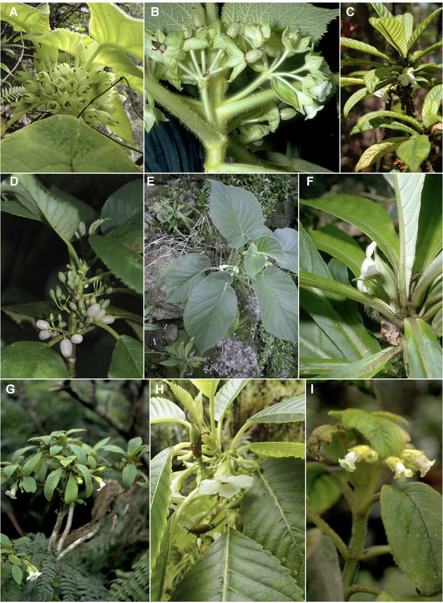

Cyrtandra (Gesneriaceae) is an Old-World genus of flowering plants
comprised of over
800 species distributed throughout Southeast Asia and the Pacific Islands,
including
the Hawaiian Islands. Molecular phylogenetic studies suggest that
Cyrtandra
colonized the Hawaii shortly after its formation approximately 4.7mya, and then
colonized younger islands through a stepping-stone model of dispersal, much like
many other groups of flowering plants on Hawaii (the Silverswords, Psychotria,
Hawaiian lobeliads, Schiedea, Silene, and Hesperomannia to
name a few). As of this
study, 60 species of Hawaiian Cyrtandra were recognized primarily on the basis
of
morphology. However, despite numerous attempts, morphological and molecular
studies
have not been able to resolve relationships for this group. Furthermore, complex
evolutionary processes of hybridization and introgression, incomplete lineage
sorting, and convergence are likely to play a role in the evolutionary history
of
Hawaiian Cyrtandra, contributing to further difficulty in resolving species
relationships (see the plate from our paper below).

In our study, we utilized targeted enrichment, high-throughput sequencing, and
modern phylogenomics tools to test a subset of Hawaiian Cyrtandra species
and
putative hybrids for species relationships and hybridization. We found high
levels
of incongruence between our concatenated-tree and species-tree, indicating high
levels of incomplete lineage sorting. Our species-tree was well resolved and
supported previous hypotheses of a stepping-stone model of dispersal from older
to
newer islands, along with some back-dispersals to older islands. Tests for
introgression and hybridization showed gene flow between taxa, though not always
the
taxa we expected. This suggests that hybridization does play a role in this
group of
flowers, but a study incorporating more putative species and hybrids is
necessary to
better understand how hybridization has shaped the relationships within this
group.